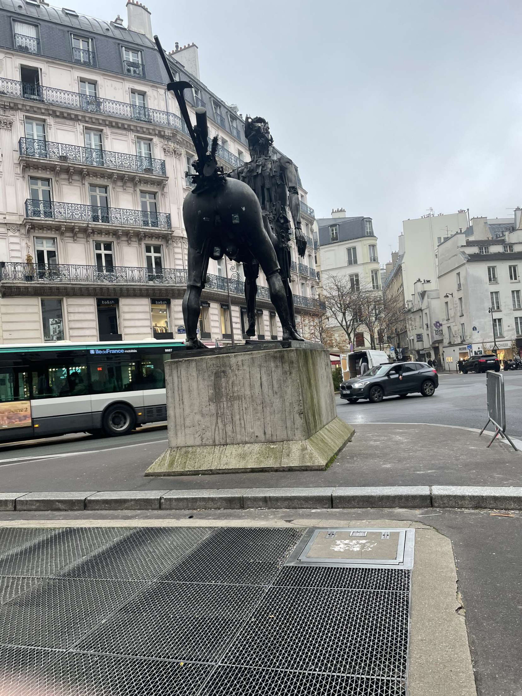
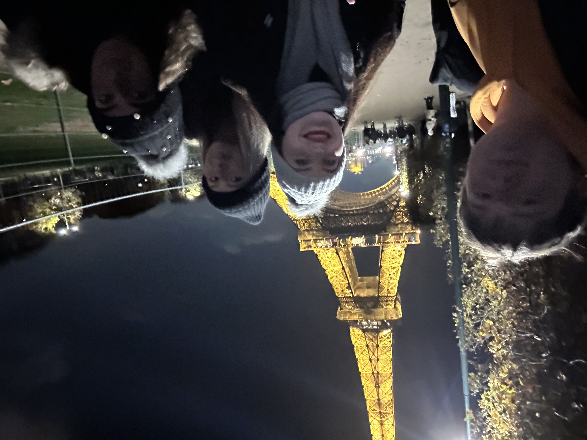

Up and downstairs for free hostel breakfast this morning. Great value. After a ‘quick’ getting ready we are off into the centre to explore.
Well planned Aimee and Jessie got us on the metro to the town centre. As we exited the station we were met with the rear of a large statue of a centaur with very large bollocks as seen below. We had a slow wander around some very expensive shops until we arrive at the Church of Saint-Sulpice. A service was in progress so we went and watched for a short time before making our way round the outside looking at all the memorials and tributes.

We continued to wandered in the direction of the Catacombs, our final destination, through a lively park while looking for a place to grab some lunch. We found somewhere with an acceptable vegetarian menu and went in. A little bit posher than the Maccies the day before with steak and potato-dauphinois in rich pepper sauce.
We arrived at the Catacombs a few minutes late but got in anyway. In Dumbledore office style, a long spiral staircase led all the way down to below to the city where around 6 million human bones are stacked up like walls of a maze for 300km. Not for the light hearted but definitely recommend.
Unfortunately on our way to the next sight we came across a Sephora and a Zara so we were delayed for an hour. Back on the metro to the Arc de Triomphe and the Eiffel Tower. We had just missed the previous light show so waited for the next one. Definitely worth it, the tower sparkled from top to bottom.
After a long day we stopped off at the supermarket for some tea and headed back to the hostel to eat. With an extra bit of energy from the food we ventured out for a drink at a local bar. We were all a bit knackered so only stayed for one (two for Jessie) before going off to bed ready for Disney tomorrow.
